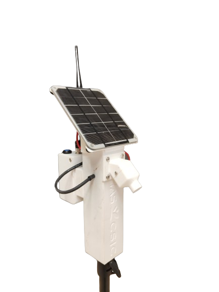
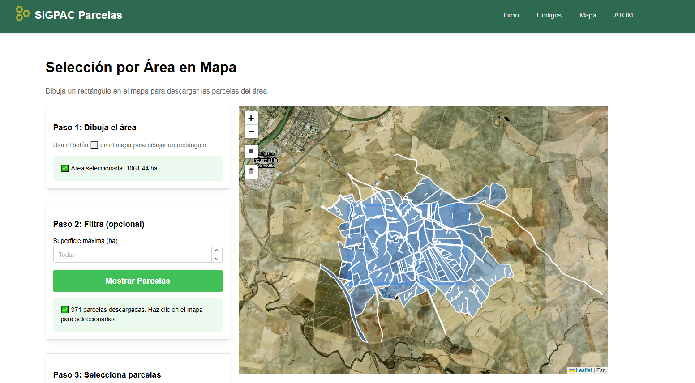
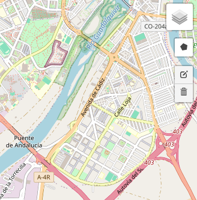

Tools and applications I built to solve real problems in the field.

Radiometric calibration system for thermal infrared cameras mounted on UAVs. Combines IoT sensor nodes with LoRaWAN communication, calibration panels, and a Python correction model — reducing temperature error from 6°C to <0.5°C.
Check it out →
A web application for downloading SIGPAC agricultural plot vectors across Spain. Supports selection by individual parcel codes, interactive map drawing, and advanced filters (area, slope, land use). Exports directly to GeoPackage and Shapefile formats.
Check it out →
A web visualizer for historical imagery in Spain, allowing users to select a region of interest and explore archival aerial photography from different decades. An accessible tool for studying landscape evolution and historical land-use changes.
Check it out →Specialized Python courses designed for agricultural professionals and researchers, covering data analysis, thermal and multispectral image processing, and geospatial analysis. Delivered to both private companies and public institutions.
Available on request